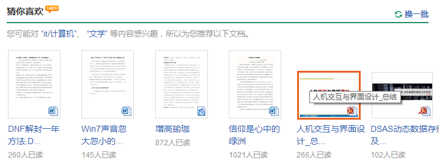

推荐系统对百度文库的总体价值
亚马逊CEO贝佐斯曾经说过："如果我有100万个用户，我就要为他们做100万个亚马逊网站"。在产品的不断累积使用过程中，为用户提供愈加丰富而准确的个性化服务，是推荐系统最核心的任务
百度文库包含海量数据资料，推荐系统根据用户显示或隐式的相关操作，通过算法分析用户行为和关系数据，挖掘用户使用习惯和兴趣点等，提供更加精准细分的内容推荐，为用户减少寻找资料的步骤
一方面拉动了文库流量，增强用户使用黏度，增加了产品使用价值；另一方面也辅助搜索所要实现的功能，缩短内容呈现距离，做到信息地更精准化呈递
普通用户大多通过百度搜索，进行资料查询而将流量导向百度文库；而推荐系统能够根据用户的操作等信息进行个性化的推荐，提供更多的相关内容展现，从而拉开内容铺设面积，使文库不只是一个内容集合，而是可以通过推荐转化更多的检索路径，从而引导用户使用更多的功能和内容
同时文库与众多网站等合作，学习社区形式的内容需要推荐系统来起到导向的作用，引导用户学习浏览文库的更多内容，形成站内一体化通道作用
文库其实是某种程度上典型的UGC，聚集了用户上传的海量文档，但是类别众多，内容层级复杂，难免产生文档内容的长尾效应，许多内容需要"显示"地挖掘才能唤醒用户的需求，除了搜索途径之外，推荐系统便能够为众多文档提供更多的“曝光”机会
加上下载文档便可获得财富值等一系列奖励机制，不同程度地提升用户分享知识的热情，为文库内容的不断丰富起到了隐式的促进作用
每篇文档都有评价栏目，如今的文库评价体系完善了一些，除了丰富了星级评价，还添加了标签描述提交
在评价基础上，标签和评分成为了算法中的重要因子，隐式地进行文档的优劣淘汰，好的文档被推荐的次数更多，标签更明确的文档精准度更高等等，不断循环迭代过后，推荐体系也为文库起到了内容优化的作用
推荐系统在文库具体页面的应用
分析具体推荐应用的有效性之前，首先粗略地将使用百度文库的用户分为以下两类
以点到面（搜索工具）：这种情况用户如果是需要查询一定的文档，很多情况下会选择百度搜索，通过搜索直接到达文库，这类用户在单个文档页的转化率会更高一些，单个文档的相关性推荐会更加具有针对性，这时用户的即时需求和延伸需求的领域会相对精准，所以此时更应该根据具体的文档内容相关因子推荐
以面到点（学习社区）：这种情况用户来到文库更多的是需求是学习浏览，推荐系统更多的主要是通过用户的兴趣点等进行展开化的推荐，提供更加准确的内容延伸与关联展示，从而为用户提供更加准确而个性化的内容展示
概述：
这是文库新上线的功能，在文库首页主Slider下方，可见度很高，在推荐结果上方标明了推荐类别，侧重长尾内容，基于兴趣推荐

情景：
用户没有特别明确的检索与学习需求，适合在文库中浏览学习的情况下，查阅更多与兴趣点相关的内容，从而展开阅读，是典型的“以面到点”
功能：
这一部分提供的内容范围较广，主要是在相应的类别条件下展现长尾内容，为用户提供更加广泛的文档，虽然准确性不高，但是却是针对第二类用户（以面到点），推荐感兴趣的类别的知识，进而浏览学习
概述：
用户可以根据自己关注的类别，定制主页推荐内容，方便每次使用文库时发现感兴趣的文档，同时确保了推荐内容的多样性
情景：
用户有明确的兴趣点，打开文库后浏览一下自己感兴趣的内容，得到个性化的推荐文档
功能：
根据相对更加细分的条件，为用户提供某个类别下的文档推荐，输出符合用户兴趣点的“较高品质”文档，具备更多的“学习参考价值”，
概述：
这两部分并不是推荐内容，但是却为推荐内容起到很到的影响作用，用户浏览的文档和收藏的文档，是最直接的显性的兴趣点因子
功能：
根据用户最近浏览行为，注重的是推荐的及时性，侧重兴趣趋势，可以保证推荐系统掌握用户就近时间段，更具时效参考性的兴趣点，有利于推荐系统及时更新推荐内容
根据用户文库内容，可以更加精准地锁定用户既定需求，虽然不具备良好的时效性，但是却能确定用户的确定需求点，有利于分析用户的长需求和基准兴趣分类
相关文档推荐 & 喜欢此文档的还喜欢：
针对文档推荐的主要目的是帮助用户延伸关联文档，提供准确并且相似度较高的内容，从而帮助用户进一步了解问题并解决需求
这一部分的推荐是用户使用最为频繁，也是转化率最高的推荐，用户的即时需求导致对此处的推荐依赖度较高，相应的对推荐内容的要求也同步提升
相关文档：主要是基于用户正在浏览的文档，计算文档相似度，从而提供相关的同类高评分文档，帮助用户拓展阅读以解决问题；适用于对解决问题点有更加深入了解的用户
喜欢此文档的还喜欢：基于大量用户数据，推荐更高品质的相关文档，是在解决问题的基础上，上升到为用户提供更加专业有效的相关文档内容，是一种文档标签属性的延伸推荐；适用于想对问题类型有更加深入了解的用户
你可能喜欢：
根据文档的关键词进行相似关键词推荐，主要是提供与此篇文档相联系的文档集，并通过选择关键词或短语进行切换推荐文档
为用户提供拓展阅读，与其他推荐不同的是，这里可以给出一个推荐矢量，让用户能够明确推荐关键词，知晓文档的大致内容方向，利于用户的延伸检索或阅读
文档评价：
完善了以前单一的打分机制，星标分为“总体评价”，“丰富度”，“阅读体验”，同时添加了用户印象标签，进一步降低了噪音对文档评价的影响，同时为文档推荐系统提供了相对更加准确的因子，整体提升了文库文档的自我优化，也带动了推荐系统的准确度

课程首页：
目前课程首页由于课程数量限制，只是根据课程热门程度和时间因素进行推荐，缺乏针对用户的个性化推荐，用户更多的是通过自行浏览和查阅来学习，学习内容难免缺乏针对性
目前课程首页由于课程数量限制，只是根据课程热门程度和时间因素进行推荐，缺乏针对用户的个性化推荐，用户更多的是通过自行浏览和查阅来学习，学习内容难免缺乏针对性
还是回归到一个基本问题，由于课程数量不大，所以无法做到有针对性的课程之间的推荐，只能通过用户-内容-用户的方式来提供课程之间的推荐，而文库内容和课程之间的推荐还有很大的空间可以挖掘，目前推荐资料的范围和拓展性还有限
针对文库推荐系统的一些个人建议
目前首页的定制只是考虑到用户的兴趣类别，提供热门阅读文档，推荐还比较粗糙，应该给予用户更加细分的选择
允许用户填写兴趣标签：例如大数据，Ruby，生活大爆炸等等。针对用户提供的标签内容为用户推荐更加高质量的文档，为了解决短时兴趣爱好变化问题，用户可以随时更改标签，提升系统推荐灵活度
结合用户的兴趣点，为用户提供相对适合的最新上传文档，在首页展现最新的文档，虽然不能为用户提供非常准确的内容推送，但是可以确保内容更新的隐式传达，同时也符合新文档的个性化递送
推荐系统最难解决的就是用户的短期兴趣变化和长期行为总结，而用户的最近浏览行为，是能够反应用户最新，最贴切地因素，为推荐系统的灵活性起到了重要的影响，但是由于浏览行为的碎片化严重，并不具备十分有效的参考价值
我的文库传达的是用户对文档信息的既定需求，具备很高的参考价值，但由于时间因素的影响，用户的关注点在不断变化中，文库内的收藏文档并不能一直有效反应用户的信息需求
所以结合以上两点，既考虑用户的最近浏览信息，又同时考虑用户的文库收藏和保存情况，综合全面的考虑用户的信息需求变化，才可以提供更加富于个性化的推荐结果
这一点借鉴于豆瓣，将标签化与内容体系联系起来，构造以标签化辅助连接的文档关系，这样虽然有一定的知识组织难度，但是却利用了用户交互操作过程中的行为，构建更加丰富和准确的文档体系，确保推荐系统的多元化和关联强度
由于文库课程初期的课程基数不大，所以难以做到有效的个性化推荐，在不断优化的过程中，针对用户的兴趣点，可以在课程页面提供两类推荐：
一种是结合用户兴趣点的个性化推荐，帮助用户快速找到符合自己需求的课程并进行学习
另一种是依据众多用户的反馈和相关操作而得出的数据集，将最新最热课程等呈现在用户面前，不考虑用户兴趣点所在，以“从面到点”的方法来挖掘用户的潜在学习需求
两种方法需要结合使用，为用户提供多元化的服务
我设计的推荐模块
新模块名称叫做“精品推荐”，位置置于文库首页主Slider的下方，“猜你喜欢”的上方，目标用户是为想要在文库定制更加精准的高品质文库内容的用户；定位是在推荐系统的基础上，为用户提供更多的自主权，可以随时根据自己的喜好不断更改具体化兴趣点，让推荐系统更加灵活地推荐高质量内容
这样做的主要是因为目前推荐系统的一个主要矛盾，是解决用户短期喜好和用户长期成长的问题。尤其是针对文档学习需求，用户的兴趣点可能会因为各种工作学习需要，随时发生变化，而如果没有更加灵活的推荐机制，会无法更好的灵活处理用户的需求变化节奏，而无法达到用户预期需求
推荐依据
“精品推荐” 根据用户的文库收藏，浏览与下载记录，搜索记录，标签集，常用分类等条件进行推荐，在此基础上结合文档的评价体系，为用户提供高质量的文档内容
内容形式
首页内容展现形式，主要保留文库的文档缩略图形式，单独陈列为一个板块内，用户可以定制自己的主页时自行选择是否展现;因为主要是为了在主页体现这个模块的推荐价值，所以当点击文档跳转到文档单独页面时，单个文档页面的UI和功能并无变化
更明确的推荐理由
在精品推荐中的每一篇文档，都会有着较为明确的主要推荐依据，这样不仅为用户提供了明确的信息追溯源，同时也从用户心理层次提升了推荐的可信度和可依赖度
例如来自“我的文库”，“最近浏览”，“搜索记录”，“我的课程相关”等等，即使向用户反馈推荐主要依据，帮助用户快速了解退内容的主要方向和范围，也易于衡量推荐内容的心理基准，结合下面的显示操作，会有更好的效果
显式行为操作
用户可以像使用在线电台产品一样，对推荐的文档进行“收藏”，“跳过”操作，一方面进行固定推荐样本中的少量更改（避免有时点击“换一批”而换掉几个不错的文档）,另一方面重要的是不断通过显式操作而反映用户的需求变化，利于推荐系统及时灵活地做出个性化调整，虽然用户会因此而产生多余操作，但是由于模块的定位就是“精品推荐”，所以用户的定制化学习需求是前提，对于这部分用户，提供更加准确的推荐起到更重要的作用（还有待更多的调查分析）
标签细分
对于分类的方法，标签起到更加精准和个性化的作用，良好的标签体系，能够为用户呈递更富“人性化”的结果，同时有利于用户在标签挑选的过程中快速细分领域，聚集需求点，缩短推荐系统的认知路径
A/B 测试评估
前提
1. 为了保证测试的可信度，需要保证A，B版本之间只相差一个变量，即新推荐模块，其他部分保持相同；
2. 确保用户始终见到一个版本，解决办法是通过cookie锁定，控制访问各版本的人数，将用户平均分配到两种测试版本上
点击率
点击率是不可或缺的重要指标，A，B两个版本的点击率，从数据角度可以说明那个版本更受用户欢迎，也能够反映出两个版本的总体吸引力
网页点击热图
通过网页点击热图了解页面的点击分布，从而分析新增加的模块在B版本中是否占据重要的因素，进而评估新模块的重要性
停留时间
分别计算用户在A和B两个版本页面的平均停留时间，通过这个指标来分析哪个版本更加符合用户需求，对用户的吸引力更大一些
转化率
根据用户在两个版本间的操作行为日志，分析用户的标星，跳转，收藏，下载等数据。转化率对于用户需求的匹配程度具有相对更高的参考价值。所以可以从转化率来分析新模块是否真的符合用户需求
第一步：比较转化率
转化率可以用来说明新版本的转化效率，是衡量新模块的重要指标，如果新版本的转化率高于旧版本，那么进行下一步的综合比较
第二部：综合比较
在转化率比较的基础上，结合点击率，点击热图，停留时间等因素，综合分析测试日志，当这些因素相差不是很大的时候，再根据相关产品时间安排，进行全流量上线即可
如果新版转化率不高，需要认真分析测试日志，考虑代码性能，模块位置，界面设计等诸多因素，进行迭代A/B测试，再统计多次测试周期的综合结果，得出结论是否全流量上线